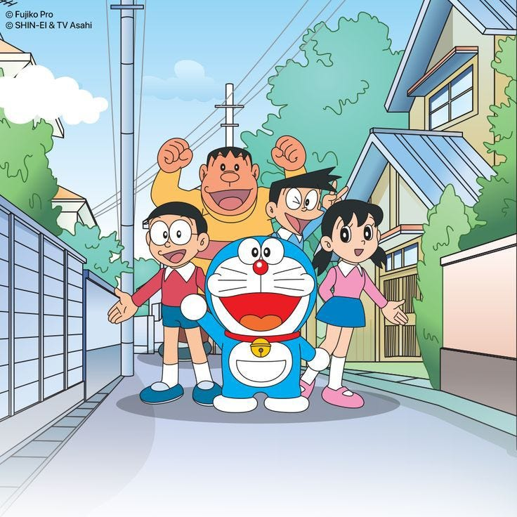

Doraemon is a beloved blue robotic cat from the 22nd century who travels back in time to help a young boy named Nobita Nobi.
He has a round face, a pocket on his belly, and a kind heart, and his mission is to improve Nobita's future.
Created by manga artists Fujiko F. Fujio, Doraemon first appeared in 1969 and quickly became a cultural icon in Japan and around the world.
Doraemon carries a four-dimensional pocket filled with futuristic gadgets that can solve almost any problem.
Some of his most famous gadgets include the "Anywhere Door," the "Take-copter," and the "Time Machine."
Despite his powerful tools, Doraemon often teaches Nobita lessons about friendship, responsibility, and honesty.
Nobita is gentle and kind, but also clumsy and unlucky, which is why Doraemon helps him every day.
Other important characters include Shizuka, Suneo, and Gian, who are Nobita's classmates and friends.
The stories usually blend humor, adventure, and heartfelt moments, making them enjoyable for children and adults alike.
Doraemon's gentle personality and earnest desire to help others make him a symbol of hope and kindness.
The series also explores the consequences of using gadgets carelessly, encouraging readers to think before they act.
Doraemon's world is filled with imaginative inventions that spark creativity and wonder.
The character has appeared in manga, anime, feature films, video games, and countless merchandise items.
Doraemon's blue color, red nose, and bell collar are instantly recognizable features around the globe.
The stories often show Doraemon rescuing Nobita from everyday troubles like homework, bullies, and exams.
Each episode or chapter usually presents a new gadget-based adventure with a meaningful message.
Doraemon encourages children to believe in themselves and to try their best even when things are difficult.
His friendship with Nobita demonstrates loyalty, patience, and the power of caring relationships.
Over the decades, Doraemon has inspired many people and remains one of the most famous and enduring characters in animation.
Even today, Doraemon continues to bring joy and imagination to new generations of fans everywhere.